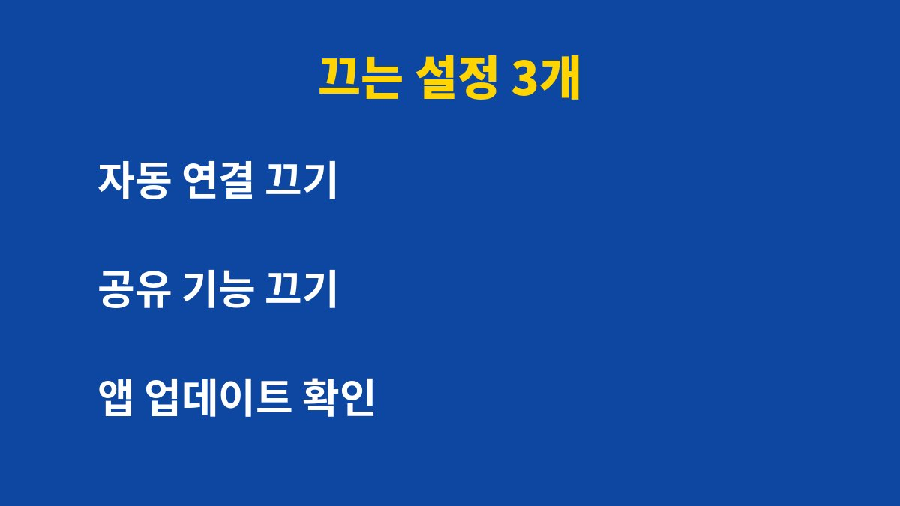
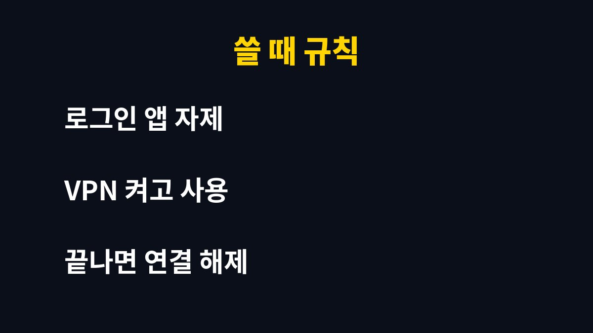

공용 와이파이는 자동 연결 하나만 꺼도 위험의 상당 부분을 줄일 수 있다. 카페나 지하철에서 와이파이를 자주 쓴다면 지금 설정부터 확인하면 된다.
그런데 와이파이가 잡히기만 하면 연결한다면 오히려 더 큰 위험을 안고 있을 수 있다. 이유는 아래에 있다.
공용 와이파이는 누구나 접속할 수 있는 열린 망이다. 같은 망에 있는 다른 사람이 통신 내용을 엿보려 시도할 수 있다. 특히 비밀번호가 없는 와이파이는 통신이 암호화되지 않는 경우가 있어 더 조심해야 한다.
더 큰 문제는 가짜 와이파이이다. 카페 이름과 비슷한 이름으로 만든 가짜 접속점에 연결하면 입력한 정보가 그대로 넘어갈 수 있다. 이름만 보고 연결하는 습관이 가장 위험하다.
스마트폰은 한 번 접속한 와이파이를 기억하고 비슷한 이름이 나타나면 자동으로 연결하는 경우가 있다. 본인이 누르지 않아도 연결되기 때문에 위험을 알아차리기 어렵다. 가짜 접속점이 같은 이름을 흉내 내면 그대로 붙을 수 있다.

설정에서 저장된 네트워크 목록을 열어 쓰지 않는 공용 와이파이는 모두 삭제하고, 공용 망의 자동 연결 항목은 끈다.
| 점검 항목 | 할 일 |
|---|---|
| 저장된 네트워크 | 쓰지 않는 와이파이 삭제한다. |
| 자동 연결 | 공용 망은 끈다. |
| 접속 확인 | 매장 직원에게 정확한 이름을 묻는다. |
| 중요 작업 | 금융·결제는 모바일 데이터로 한다. |
| 사용 후 | 연결을 해제하고 잊기를 누른다. |
이 다섯 가지만 지켜도 대부분의 위험 상황을 피할 수 있다. 어렵지 않은 설정이므로 오늘 바로 해 두면 된다.

은행 앱 송금, 카드 결제, 새로운 계정 로그인은 공용 와이파이에서 하지 않는다. 꼭 해야 한다면 와이파이를 끄고 모바일 데이터로 전환하면 된다. 데이터 사용이 부담된다면 신뢰할 수 있는 VPN을 쓰는 방법도 있다.
또 로그인 화면이 갑자기 뜨면서 개인정보나 인증번호를 요구한다면 즉시 연결을 끊어야 한다. 정상적인 매장 와이파이는 보통 간단한 동의 화면만 보여 준다.
이미 위험한 망에 접속한 것 같다면 주요 계정의 비밀번호를 바꾸고 2단계 인증을 켜 둔다.
공용 와이파이를 쓸 때는 접속한 사이트 주소창에 자물쇠 표시가 있는지 먼저 본다. 집에 돌아오면 저장된 네트워크 목록을 다시 열어 그날 연결한 공용 와이파이를 지운다. 파일 공유나 근거리 공유 기능도 공용 망에서는 꺼 두면 낯선 기기의 접근을 줄일 수 있다.
이런 생활 보안 정보를 계속 받고 싶다면 블로그를 구독해 두면 된다.
기사·공식 발표 기준이며 출시·가격 정보는 바뀔 수 있다.